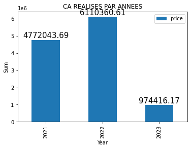
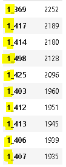

Analyse des données et résultats
Les différents indicateurs et graphiques autour du chiffre d'affaires.
Le CA total est de 11 856 820.47 €.
La catégorie qui a la plus grande part du CA est la 1 ensuite la 0 et enfin la 2.

Les hommes représente une plus grande part du CA que les femmes mais la différence est petite.
Les 41-50 et les 31-40 représente la plus grande part du CA, suivit des 17-25.
Regarder l’évolution dans le temps et mettre en place une décomposition en moyenne mobile pour évaluer la tendance globale.
J'ai 3 années calendaires mais 24 mois, car l'année 2021 ne comporte pas les mois de janvier et février et l'année 2023 comporte seulement les mois de janvier et février. L'année 2022 est la meilleure année en terme de CA et elle à une année complète de ventre. L'année 2023 est la moins bonne en terme de CA et elle a seulement 2 mois de ventes.
Quand on regarde plus en détails les différentes CA fait sur les différentes mois, l'on constate que les CA oscillent constamment entre 450 000 et 550 000. Mais il y a eu une grosse baisse de CA en octobre 2021 (pas de transactions entre le 2 et le 27 octobre 2021) et le mois suivants une grosse augmentation cela est du à la catégorie 1. Après la grosse remontée il y a un légère baisse et ensuite l'évolution devient très discrète pour finir par rechuter. Il y a en fin d'année 2021 (fêtes de fin d'années ?) et le début de l'année 2022 (soldes d'hiver ?) une tendence à la hausse.
Le CA va ensuite baisser et "ocillier" entre 517 000 et 493 000, jusqu'à baisser à 456 000 pour le mois de février 2023. En regardant avec des graphiques et en utilisant en plus des moyennes mobiles, l'on constate que le CA évolue avec peu de variation, Il y a quand même la grande variation qui à lieu sur la période septembre/octobre/novembre 2021.
Faire un zoom sur les références, pour voir un peu les tops et les flops, la répartition par catégorie, etc.
Les 10 réf les plus vendues (quantité) sont des 1.
Les 10 réf les moins vendues (quantité) sont des 0.
Les références qui générés le plus de CA sont d'abord des 1 ensuite des 0 et des 2.
Les références les plus présentes en nombres sont des 0 ensuite des 1 et des 2.
Quelques informations sur les profils de nos clients, et également la répartition du chiffre d'affaires entre eux, via par exemple une courbe de Lorenz.
Repartition du CA par sex
Il y a presque autant de femmes que d'hommes (il y a 2541 d'hommes de plus que de femmes).
Repartition du CA par tranches d'âges.
Les 3 tranches d'âges les plus présentes sont les 41-50, les 31-40 et les 51-60.
Repartition du CA par sex et tranches d'âges.
Les hommes sont majoritaires dans les tranches d'âges 41-50 et 17-25.
Repartition du CA par tranches d'âges et catégories.
La catégories 0 est présente pour les 41-50 et 31-40.
La catégories 1 est majoritaire pour les autres tranches d'âges mais de manière bien moins significative.
Repartition du CA par sex et categ
Il y a une légère différence, les hommes représentent plus.
La répartition du CA entre les clients (courbe de Lorenz)
La courbe de Lorenz est une représentation graphique de la distribution d'une variable. Ici nous voulons voir comment ce présente la répartition du CA entre les clients. Il faut pour construire une courbe de Lorenz que l'axis x représente la population de 0 à 100% (0 à 1) et que l'axis y représente le pourcentage cumulée du CA.
L'indice de Gini calculé ci-dessous permet de connaite l'air de la surface entre la droite et la courbe de Lorenz.
Cet indice va de 0 à 1.
0 représente une répartition parfaitement égalitaire.
1 représente une répartition parfaitement inégalitaire.
Le coefficient de Gini est de 0.44, on est donc sur une répartition relativement proportionnée.